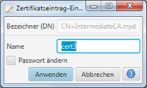

Zertifikat-Einstellungen bearbeiten
Mittels diesen Dialogs können verschiedene Einstellungen zur Ablage des Zertifikats nach seiner Erstellung
geändert werden.

Der Name des Zertifkats und damit der zur Speicherung der einzelnen Zertifikats-Elemente genutzte Dateinamen kann hier
geändert werden. Mit Anwendung der Änderung werden die Zertifikats-Elemente umbenannt.
Die Auswahl der "Passwort ändern"-Option bewirkt, dass beim Anwenden der Änderungen ein neues Passwort
zur Speicherung des Zertifikat-Schlüssels gesetzt wird. Diese Option ist nur für Zertifikate mit einem
Passwort-geschützten Schlüssel verfügbar. Zur Änderung des Passworts werden zunächst das
alte Passwort abgefragt und im Anschluss das
neue Passwort.